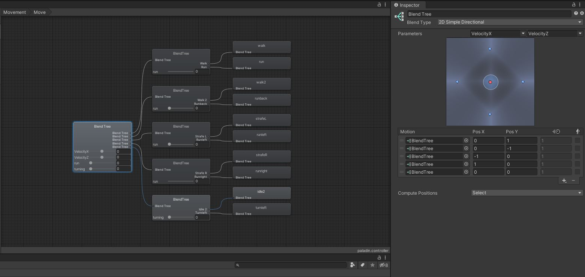

Knight Game & Arhcer Game
The purpose of these to games was to teach myself animation controlling and animation blending using C# and unity. An animation blend tree is a way to blend between various animations. This allows to smooth transitions between animation as well as hybrid animation. An excellent example of this would be having a walk animation and a run animation, and blending the two together to get various speeds of walking/running/jogging. An example of one of the animation trees I made for this project can be found below. The Knight game was highly inspired by Dark Souls and functions similarly to it. The play has a health and stamina bar. The enemy has random movement as well as various preset random actions it can take. Both the player and enemy use the same animation tree, with there own controllers. The animation controllers are able to set values, trigger and bools for the tree to switch or blend the various animations. The archer game is similar in use of animation tree and animation blending, however the controllers and gameplay is different. The archer character has a charged shot ability allowing her to do more damage based on the charge. Overall both projects were a great opportunity to get to teach myself more about animation blending. Demo videos of both can be found below. All models and animations were gotten from : Mixamo The code for the Knight Game can be found here : Github The code for the Archer Game can be found here : Github
